Scene 1Warm-Up
▶ Start hereHow your Wonder Films lessons work1-minute videoOpen ▾
🎯 TodayI can…
- ask a science question and design a way to investigate it.
- use evidence to explain what I discovered.
- reflect on how I've grown as a scientist this year.

🔎 Mystery specimenOld pages, full of clues?
What to do: Press Inspect specimen. Move the magnifying lens over the page, then tap 3 things you notice.
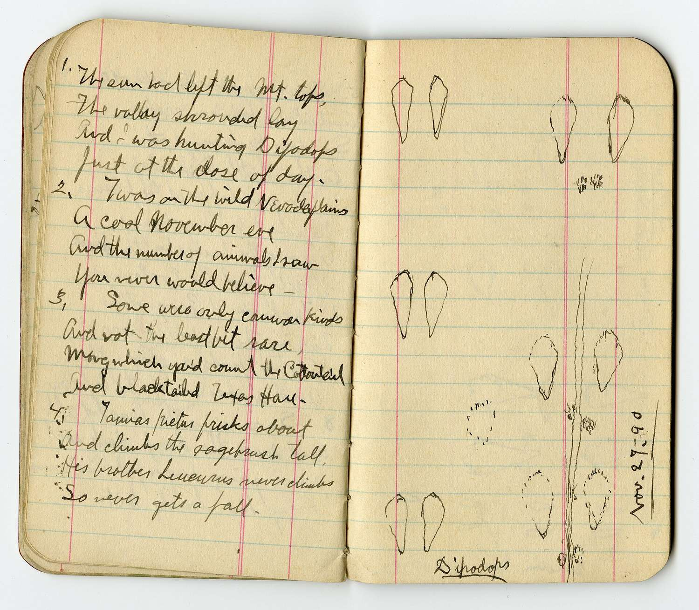
📚 Word WallWords scientists use
What to do: Tap or click each card to flip it and read what the word means.
Scene 2The Lesson
🧠 Part 1You Already Think Like a Scientist
Remember the old pages? They come from the field book of Vernon Bailey, a scientist who studied animals. In 1890 in Nevada, he drew the tracks of a kind of kangaroo rat. It hops on two big back feet, so its prints come in pairs. He wrote the date, too. That's what scientists do: observe, record, and use evidence.
Scenario A · A Mountain Park. In 1988, fires burned about a third of Yellowstone National Park. What grows back?
🎞️ Put the scenes in orderHow does a forest come back after a fire?
What to do: Drag each photo into the film strip, from first to last. You can also tap a photo, then tap a frame. Get the order right and your strip becomes a movie.
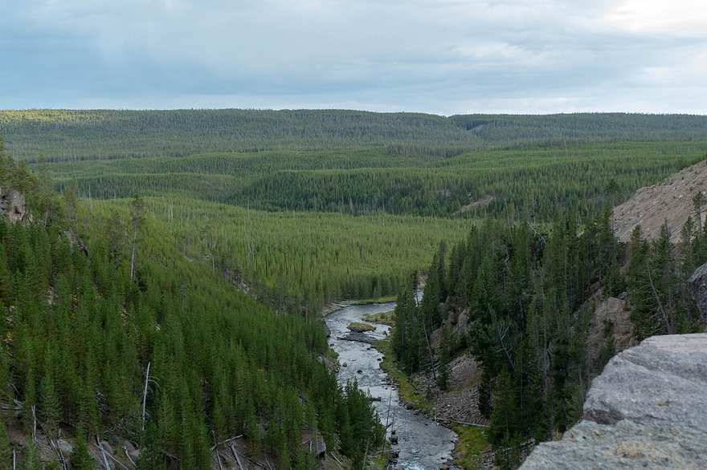
Mia says, "After a big fire, a forest is gone for good." What do you think?
🏖 Part 2Scenario B · A New Parking Lot
Sea turtles nest on Florida beaches every summer. At night, the hatchlings dig out and crawl toward the brightest light. On a natural beach, that's the moon and stars over the ocean. Now a new parking lot with bright lights is being built near the beach. What will the hatchlings do?
🧪 The Turtle TestWhich way will the hatchlings crawl?
What to do: Follow the steps one at a time. You will pick, test, and then explain.
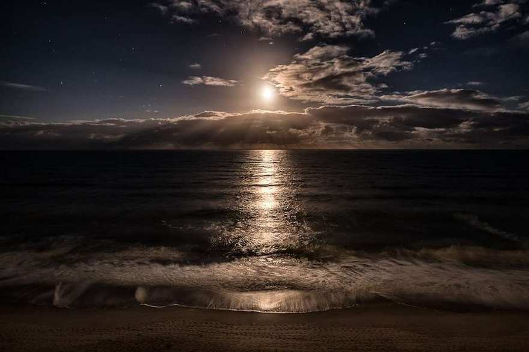
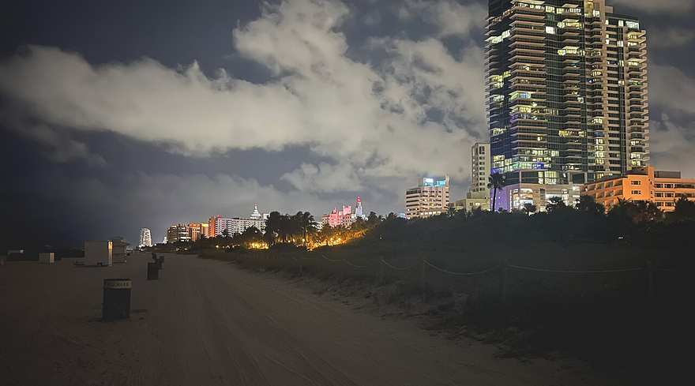
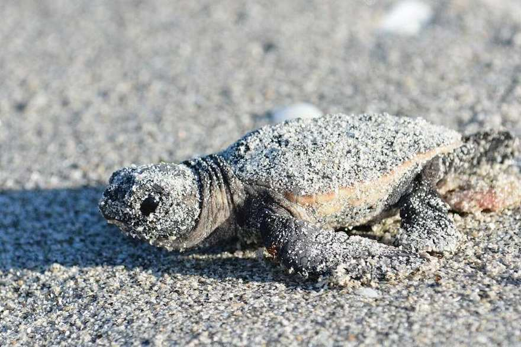
A hatchling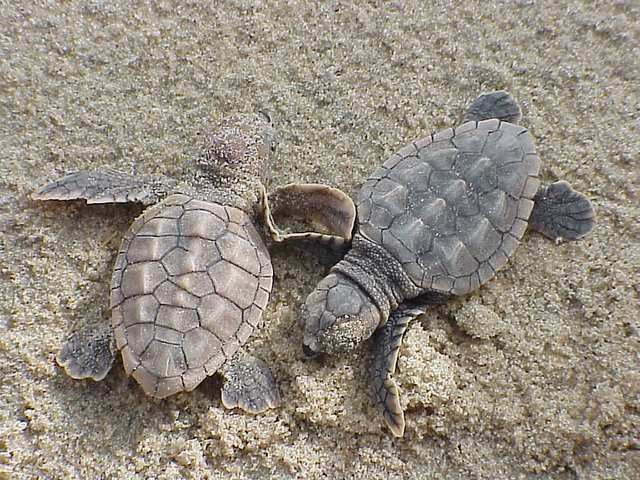
🏔 Part 3Scenario C · Shorter, Warmer Winters
On a mountain, it gets colder the higher you go. Each plant and animal lives where the temperature fits it. In parks like Rocky Mountain National Park in Colorado, winters are getting shorter and warmer. Scientists check the same places year after year, looking for a pattern.
🏔 The Mountain ClimbExplore a mountain, one stop at a time
What to do: First, make a prediction. Then brush the glowing stop: drag across it (or tap it again and again) until the photo shows.
Leo says, "If winters keep getting warmer, pikas will move down the mountain." What do you predict?
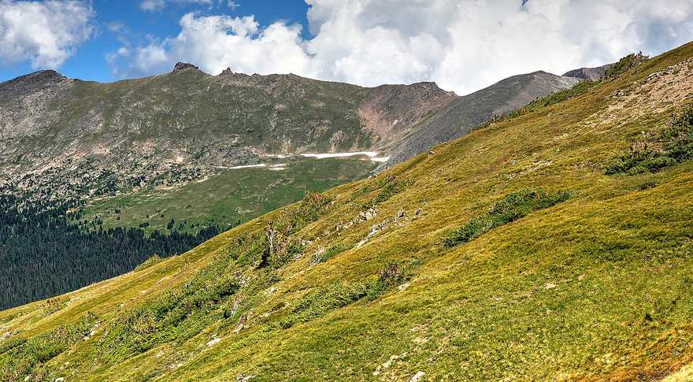
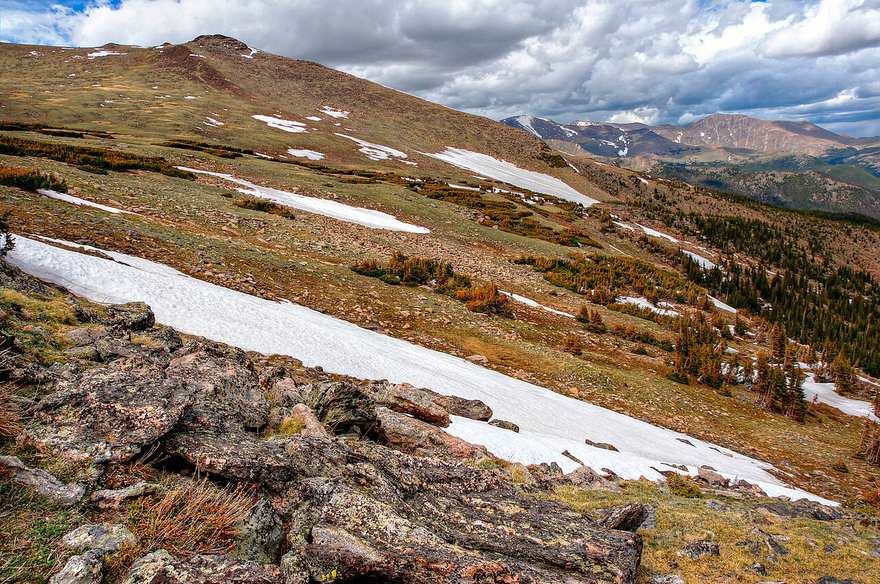
Stop 1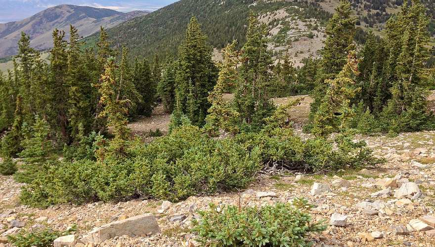
Stop 2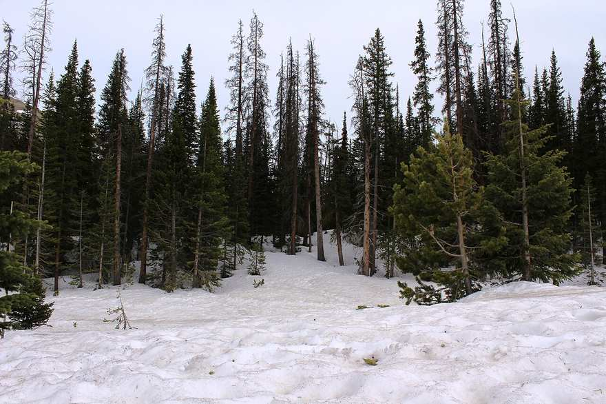
Stop 3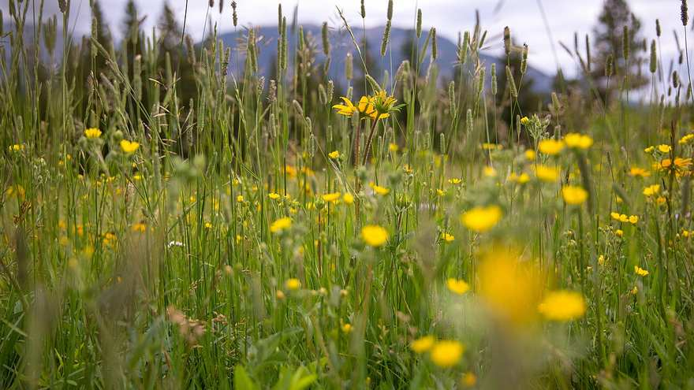
Stop 4Living things live where the conditions fit them. When winters get shorter and warmer, snow melts sooner, flowers bloom earlier, and animals that need cold, like pikas, can only live higher up. In some mountains, scientists now find pikas only higher up than where they lived long ago.
Ava says, "One warm winter proves the mountain is changing." What do you think?
Old Faithful Kept Erupting
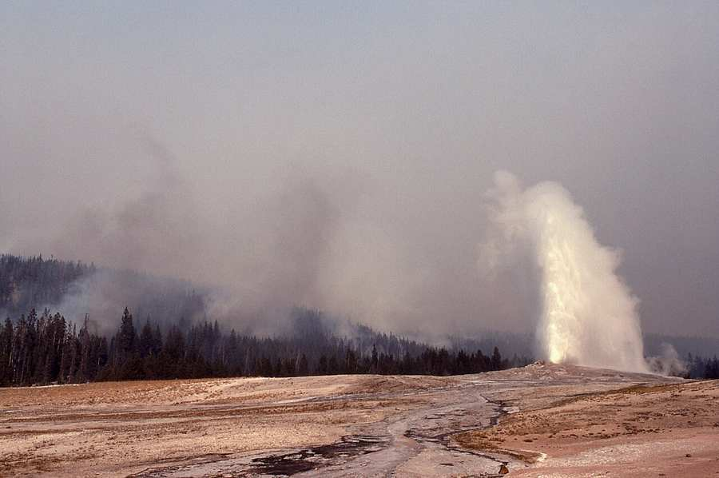
On September 7, 1988, fire swept right up to the buildings at Old Faithful. Firefighters worked to save them, and the geyser kept erupting, just as it always had.
The next summer, scientists walking the burned ground found tiny pine seedlings almost everywhere they looked. The forest was already starting over.
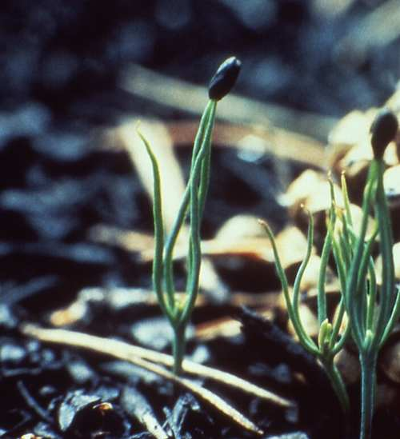
🎞️ Part 4Year in Review Files
What to do: Pick 3 cards, one at a time. Tap something you see, then name the science topic. Predict what scientists figured out, and see the evidence.
| Card | What I saw | Topic | What it shows | My evidence |
|---|
🗂️ Sort the discoveriesUse your evidence to sort the discoveries OPTIONALOpen ▾
What to do: Pick one you solved. Pick the place it points to, then pick the living things that belong there.
Pick one from your chart and explain it.
Start with: "Card __ shows…"
Scene 3Self-Check
A scientist notices that plants near a river grow taller than plants far from it. What should she do next?
Which of these is the best example of using evidence to support an idea?
You studied weather, ecosystems, forces, and engineering this year. What do all of these have in common?
Scene 4Assignment
🔍 Part AInvestigation report
What to do: Answer in complete sentences. Use your science words.
1. Which scenario did you choose: A (the burned forest), B (the turtle beach), or C (the warmer mountain)? What was your science question?
2. What prediction did you make? Was it correct? Explain.
3. Name two science topics from this year that connect to your scenario. How do they connect?
🚀 Part BShort answer
What to do: Answer in complete sentences. Use your science words.
1. What is the difference between a guess and a conclusion? Why does evidence matter?
2. Describe one cause and effect relationship from your scenario. What caused the change, and what happened because of it?
✍️ Write and explainYou just finished your last science investigation of 3rd grade. What did you discover, and what does it tell you about how the natural world works?
What to do: Pick one from your evidence chart. Answer the three questions. Use at least two of the science words under the boxes.
Start with: "In my investigation, I discovered that…"
Start with: "I know this because…"
Start with: "This matters because…"
🎨 Part CDraw and label
What to do: Make your "My Year as a Scientist" page. Draw a model of your scenario with at least 3 labels and arrows that show cause and effect.
🎬 Your question from Scene 1Can you answer it now?
What do you still wonder about? Write your question here. Then answer it.
📋 My answersEverything you wrote, in one place
(Your answers show up here as you write.)
How to turn in: Copy your answers and paste them into the Canvas assignment. Or download the file and upload it. Then press Save my drawing in Part C and upload your drawing too.
✅ Checklist
What to do: Tap each item when it is done. Items you finish on the page check themselves.
- My evidence chart has 3 Year in Review files and my explanation.
- Part A: all three answers.
- Part B: questions 1 and 2.
- Part C: my drawing and both labels.
- Write and explain, with at least two science words.
🎬 Premiere my scientist storyYour exhibit
What to do: Check your exhibit. Pick the one you wrote about, add your first name, then press Premiere film.
I observed…
It's from…
My evidence…
It tells us…
🎞️ This film's frames
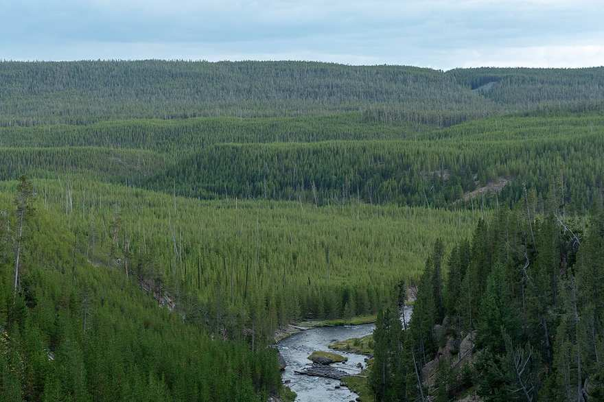
After the Fire
The Turtle Test
The Mountain Climb
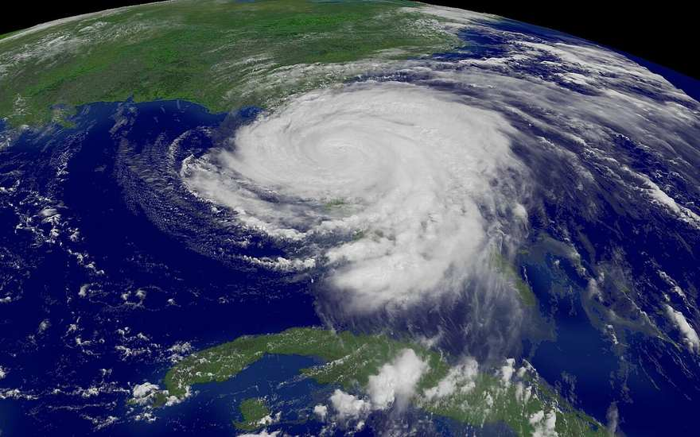
Year in Review
Earn all four frames in the Lesson, then finish the checklist.
🔜 Coming up next🎉 That's a wrap on 3rd grade science!
You finished every Wonder Film this year. Keep asking questions this summer: watch the clouds, flip over a rock, follow a bird. Every scientist starts by noticing. Get ready for 4th grade science!
Photo and music credits
- Loggerhead sea turtle hatchlings (8002919527), U.S. Fish and Wildlife Service, Public domain
- Tynsky, Jim- Priscacara serrata Fossil (8e3b95ea-1005-4c34-b4f0-05086409dbd4), NPS photo, Public domain
- Fossil Butte is capped by limestone deposited by ancient Fossil Lake, part of…, NPS photo, Public domain
- File:Hurricane Frances over Florida (2268-321), NOAA, Public domain
- File:NOAA Hurricane Hunters flying through Hurricane Irma, NOAA, Public domain
- Monarch butterfly on blazing star (54763664754), U.S. Fish and Wildlife Service - Midwest Region, Public domain
- File:Monarch Tagging - Summer of 2019 (e627dbc5-0e5c-45b8-a30e-792d63175c98), NPS, Public domain
- File:Aerial view of alligator hole (3efd265b-1dd8-b71c-07d2-adff37ffd152), NPS, Public domain
- File:Great Blue Heron & Gator, NPSphoto, S. Zenner (9101425836), Everglades NPS from Homestead, Florida, United States, Public domain
- Coquina 1, James St. John, CC BY 2.0
- Castillo de San Marcos, St. Augustine, FL - 50857016223, w_lemay, CC BY-SA 2.0
- File:Pika gathering grass for the winter (Rock Cut, Rocky Mountain NP) (28347…, KimonBerlin, CC BY-SA 2.0
- File:Tundra in Rocky Mountain National Park, atbaker, CC BY 2.0
- File:Corn Snow Rocky Mountain National Park USA, Greg Tally - User: (WT-shared) WineCountryInn at wts wikivoy, CC BY-SA 3.0
- File:Rocky Mountain Wildflowers (28690491976), NPS Natural Resources, Public domain
- File:Rocky Mountain National Park Aerial (50729692132), formulanone, CC BY-SA 2.0
- File:Burned trees in blow-down area between Norris & Canyon (d4d8e7ae-0371-40…, NPS/Jim Peaco, Public domain
- File:Vegetation ecologist, Stefanie Wacker, examines a quadrat in the Gardine…, YellowstoneNPS, Public domain
- File:Trail Ridge Road-Beaver Meadow Road - Graced by Wildflowers - NARA - 772…, Unknown authorUnknown author or not provided, Public domain
- File:Crown fire Old Faithful, National Park Service (Yellowstone National Park), Public domain
- First steps of hatchling of loggerhead sea turtle (Caretta caretta) running t…, Jean-Lou Justine, CC BY-SA 4.0
- File:Ochotona princeps on Flattop Mountain on Rocky Mountain National Park (6…, Miguel Vieira from Redwood City, CA, USA, CC BY 2.0
- File:Lodgepole pine Yellowstone 1998, National Park Service (Yellowstone National Park), Public domain
- File:Lodgepole pine seedlings Yellowstone, National Park Service (Yellowstone National Park), Public domain
- File:Tundra Snow Fields, MichaelKirsh, CC BY-SA 4.0
- File:2013-07-14 16 33 58 Krummholz Engelmann Spruce at tree-line on Wheeler P…, Famartin, CC BY-SA 3.0
- File:Rocky Mountain National Park, Colorado-34, Sarbjit Bahga, CC BY-SA 4.0
- File:Rocky Mountain Wildflowers (48496768561), NPS Natural Resources, Public domain
- File:Fire above Snake River, National Park Service (Yellowstone National Park), Public domain
- File:The serotinous cone of a lodgepole pine, opened by the flames of the Map…, Yellowstone National Park, Public domain
- File:Lodgepole pine regrowth after 1988 fire along Gibbon River (48793693943), Yellowstone National Park, Public domain
- File:Lodgepole pine regrowth after 1988 fire along Gibbon River (48794197667), Yellowstone National Park, Public domain
- File:Rocky Mountain National Park Tundra Skyline, MichaelKirsh, CC BY-SA 4.0
- File:Drawings of animal tracks and poetry related to animal specimen collecti…, Smithsonian Institution from United States, No restrictions
- Moonlight Florida United States Travel Photography (233161441), Giuseppe Milo, CC BY 3.0
- File:High-rise condominiums above a beach at night, Miami Beach, Florida, Z3lvs, CC0
- File:Old Faithful erupting during fire, National Park Service (Yellowstone National Park), Public domain
- Music: Academic Festival Overture (Johannes Brahms), Musopen public domain recording (via Wikimedia Commons).
- Opti the owl: Optima Academy. Sound effects are made by the page. The fire movie, the Turtle Test, and the mountain are models; every place photo is real. The field book page is by Vernon Orlando Bailey, Nevada, 1890 (Smithsonian Institution Archives). The opened pine cone in scene 2 is from Yellowstone's 2016 Maple Fire; the twisted treeline trees at Stop 2 grow on Wheeler Peak, Great Basin National Park, Nevada.